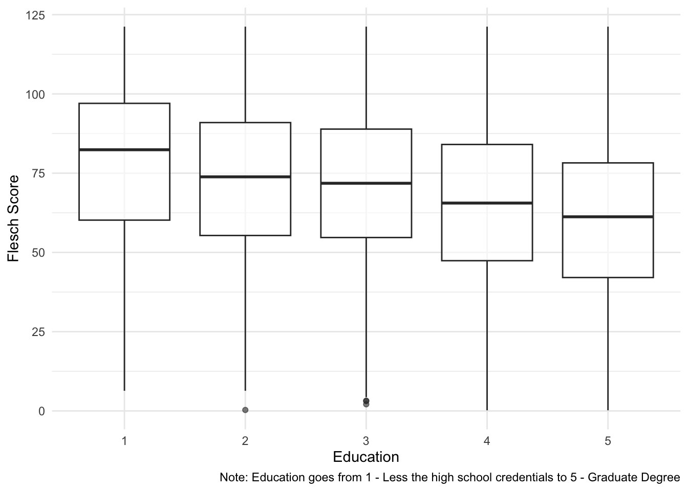

Chapter 4 Week 4: Complexity and Similarity
Slides
- 5 Complexity and Similarity (link or in Perusall)
4.1 Setup
As always, we first load the packages that we’ll be using:
library(tidyverse) # for wrangling data
library(tidylog) # to know what we are wrangling
library(tidytext) # for 'tidy' manipulation of text data
library(textdata) # text datasets
library(quanteda) # tokenization power house
library(quanteda.textstats)
library(quanteda.textplots)
library(wesanderson) # to prettify
library(stringdist) # measure string distance
library(reshape2)4.2 Replicating the Lecture
In this weeks lecture, we learned about similarity and complexity measures at the word- and document-level. We will follow the same order from the lecture slides.
4.3 Comparing Text
There are different ways to compare text, depending on the unit of analysis: - Character-level comparisons - Token-level comparison
4.3.1 Character-Level Comparisons:
Let’s start by using character-level comparisons tools to evaluate two documents (in this case, two statements made by me on any given Ontario winter day):
doc_1 <- "By the professor’s standards, the weather in Ontario during the Winter term is miserable."
doc_2 <- "By the professor’s high standards, the weather in London during the Winter term is depressive."From ?stringdist, we know that “the longest common substring distance is defined as the number of unpaired characters. The distance is equivalent to the edit distance allowing only deletions and insertions, each with weight one.” We also learned about Levenshtein distance and Jaro distance. We can easily implement these using the stringdist function:
## [1] 27## [1] 20## [1] 0.1768849Each distance provides slightly different information about the relation between both documents. There are other distances that the stringdist function can compute. If this is something that interests you, there is more information about each measure in this paper.
Have I ever used these measure in my own work? Actually, yes. When combining a corpus of legislative speeches from the Ecuadorian Congress with a data set of Ecuadorian legislators, I matched the names of both data set using fuzzy matching or matching names that were closely related (even if they were not a perfect match). Here is an example of the code:
# I have a dataframe df_a and df_b. I want to match names from b to a. I run a loop that goes through all the names b and gives a Jaro distance score for a name in a. I assume that the names are a match when the Jaro distance score is highest AND it is above a threshold (0.4).
for(i in 1:length(df_a$CANDIDATO_to_MATCH)){
score_temp <- stringdist(df_a$CANDIDATO_to_MATCH[i],df_b$CANDIDATO_MERGE,method = "jw")
if(max(score_temp)>.4 & length(which(score_temp == max(score_temp)))<2){
df_a$CANDIDATO_MERGE[i] <- df_b$CANDIDATO_MERGE[which(score_temp == max(score_temp))]}
else{
df_a$CANDIDATO_MERGE[i] <- NA}
}It saved me a lot of time. I still needed to validate all the matches and manually match the unmatched names.
4.3.2 Token-Level Comparisons:
To compare documents at the token level (i.e., how many and how often to token coincide), we can think of each document as a row/column in a matrix and each word as a row/column in a matrix. We call these matrices, document-feature matrices or dfm. To do that using quanteda we first need to tokenize our corpus:
doc_3 <- "The professor has strong evidence that the weather in London (Ontario) is miserable and depressive."
docs_toks <- tokens(rbind(doc_1,doc_2,doc_3),
remove_punct = T)
docs_toks <- tokens_remove(docs_toks,
stopwords(language = "en"))
docs_toks## Tokens consisting of 3 documents.
## text1 :
## [1] "professor’s" "standards" "weather" "Ontario" "Winter"
## [6] "term" "miserable"
##
## text2 :
## [1] "professor’s" "high" "standards" "weather" "London"
## [6] "Winter" "term" "depressive"
##
## text3 :
## [1] "professor" "strong" "evidence" "weather" "London"
## [6] "Ontario" "miserable" "depressive"Now we are ready to create a dfm:
## Document-feature matrix of: 3 documents, 13 features (41.03% sparse) and 0 docvars.
## features
## docs professor’s standards weather ontario winter term miserable high london
## text1 1 1 1 1 1 1 1 0 0
## text2 1 1 1 0 1 1 0 1 1
## text3 0 0 1 1 0 0 1 0 1
## features
## docs depressive
## text1 0
## text2 1
## text3 1
## [ reached max_nfeat ... 3 more features ]Just a matrix (are really sparse matrix which becomes even more sparse as the corpus grows). Now we can measure the similarity or distance between these two text. The most straightforward way is to just correlate the occurrence of 1s and 0s across texts. An intuitive way to see this is by transposing the dfm and presenting it in a shape that you are more familiar with:
## docs
## features text1 text2 text3
## professor’s 1 1 0
## standards 1 1 0
## weather 1 1 1
## ontario 1 0 1
## winter 1 1 0
## term 1 1 0
## miserable 1 0 1
## high 0 1 0
## london 0 1 1
## depressive 0 1 1
## professor 0 0 1
## strong 0 0 1
## evidence 0 0 1Ok, now we just use a simple correlation test:
## text1 text2 text3
## text1 1.0000000 0.2195775 -0.4147575
## text2 0.2195775 1.0000000 -0.6250000
## text3 -0.4147575 -0.6250000 1.0000000From this we can see that text1 is more highly correlated to text2 than to text 3. Alternatively, we can use the built-in functions in quanteda to obtain similar results without having to transform our dfm:
## textstat_simil object; method = "correlation"
## text1 text2 text3
## text1 1.000 0.220 -0.415
## text2 0.220 1.000 -0.625
## text3 -0.415 -0.625 1.000We can use textstat_simil for the a whole bunch of similarity/distance methods:
## textstat_simil object; method = "cosine"
## text1 text2 text3
## text1 1.000 0.668 0.401
## text2 0.668 1.000 0.375
## text3 0.401 0.375 1.000## textstat_simil object; method = "jaccard"
## text1 text2 text3
## text1 1.00 0.500 0.250
## text2 0.50 1.000 0.231
## text3 0.25 0.231 1.000## textstat_dist object; method = "euclidean"
## text1 text2 text3
## text1 0 2.24 3.00
## text2 2.24 0 3.16
## text3 3.00 3.16 0## textstat_dist object; method = "manhattan"
## text1 text2 text3
## text1 0 5 9
## text2 5 0 10
## text3 9 10 0We can also present these matrices as nice plots:
cos_sim_doc <- textstat_simil(docs_dmf, margin = "documents", method = "cosine")
cos_sim_doc <- as.matrix(cos_sim_doc)
# We do this to use ggplot
cos_sim_doc_df <- as.data.frame(cos_sim_doc)
cos_sim_doc_df %>%
rownames_to_column() %>%
# ggplot prefers
melt() %>%
ggplot(aes(x = as.character(variable),y = as.character(rowname), col = value)) +
geom_tile(col="black", fill="white") +
# coord_fixed() +
labs(x="",y="",col = "Cosine Sim", fill="") +
theme_minimal() +
theme(axis.text.x = element_text(
angle = 90,
vjust = 1,
hjust = 1)) +
geom_point(aes(size = value)) +
scale_size(guide = 'none') +
scale_color_gradient2(mid="#A63446",low= "#A63446",high="#0C6291") +
scale_x_discrete(expand=c(0,0)) +
scale_y_discrete(expand=c(0,0))## Using rowname as id variables
Noise!
4.4 Complexity
From this week’s lecture (and one of the readings) we know that another way of analyzing text is by computing its complexity. In Schoonvelde et al. (2019) - Liberals lecture, conservatives communicate: Analyzing complexity and ideology in 381,609 political speeches, the authors use Flesch’s Reading Ease Score as a measure of “complexity” or readability of a text (see ??textstat_readability for the formula and other readability measures). Flesch’s Reading Ease Score ranges from 0 to 100, where higher values suggest less complex/more readable text (e.g., a score between 90 and 100 is a text that can be understood by a 5th grade; a score between 0 and 30 is a text that can be understood by a college graduate and professional). It obtains the score taking into consideration the average length of a sentence, the number of words, and the number of syllables.
Let’s apply the readability score to some open-ended questions from the 2020 ANES survey, and see how these correlate to the characteristics of the respondents.
## # A tibble: 6 × 9
## V200001 like_dem_pres dislike_dem_pres like_rep_pres dislike_rep_pres income
## <dbl> <chr> <chr> <chr> <chr> <int>
## 1 200015 <NA> nothing about s… belife in a … <NA> 21
## 2 200022 <NA> He wants to tak… <NA> <NA> 13
## 3 200039 He is not Dona… <NA> <NA> He is a racist,… 17
## 4 200046 he look honest… <NA> <NA> racism, equalit… 7
## 5 200053 <NA> Open borders, l… No war, No o… Ridiculous Covi… 22
## 6 200060 he is NOT Dona… <NA> <NA> He is a crimina… 3
## # ℹ 3 more variables: pid <int>, edu <int>, age <int>We have open-ended survey questions that ask respondents what they like and dislike about the Democratic (Joe Biden) and Republican (Donald Trump) 2020 US presidential candidates before the election. Note that survey respondent could opt out of the question and are given an NA.
Let’s check:
## Warning: NA is replaced by empty string## # A tibble: 15 × 2
## like_dem_pres read_like_dem_pres
## <chr> <dbl>
## 1 <NA> NA
## 2 <NA> NA
## 3 He is not Donald Trump. 100.
## 4 he look honest and his politics history. 54.7
## 5 <NA> NA
## 6 he is NOT Donald Trump !!!!!! 100.
## 7 he has been in gov for almost 50 yrs and was vice for 8 a… 89.6
## 8 <NA> NA
## 9 he is wanting to do things to help the people of the US. 96.0
## 10 <NA> NA
## 11 Candidato adecuado para liderar un pais. -10.8
## 12 <NA> NA
## 13 <NA> NA
## 14 Everything he stands for. 75.9
## 15 He is very intuned with his voters and their point of view 81.9Makes sense: the third row is quite easy to ready, the fourth row is a bit more complex, and the eleventh row is impossible to read because it is in Spanish.
open_srvy %>%
# Remove people who did not answer
filter(edu>0) %>%
# Remove negative scores
filter(read_like_dem_pres>0) %>%
ggplot(aes(x=as.factor(edu),y=read_like_dem_pres)) +
geom_boxplot(alpha=0.6) +
# scale_color_manual(values = wes_palette("BottleRocket2")) +
# scale_fill_manual(values = wes_palette("BottleRocket2")) +
theme_minimal() +
theme(legend.position="bottom") +
labs(x="Education", y = "Flesch Score",
caption = "Note: Education goes from 1 - Less the high school credentials to 5 - Graduate Degree")## filter: removed 131 rows (2%), 8,149 rows remaining## filter: removed 4,413 rows (54%), 3,736 rows remaining
Look at that… having a degree makes you speak more complicated.
4.5 Exercise (Optional)
- Extend the analysis of the ANES data using other readiability scores and/or other variables.
- If you wanted to use a similarity/distance measure to explore the ANES data, how would you go about it? What would you be able to compare using only the data provided?